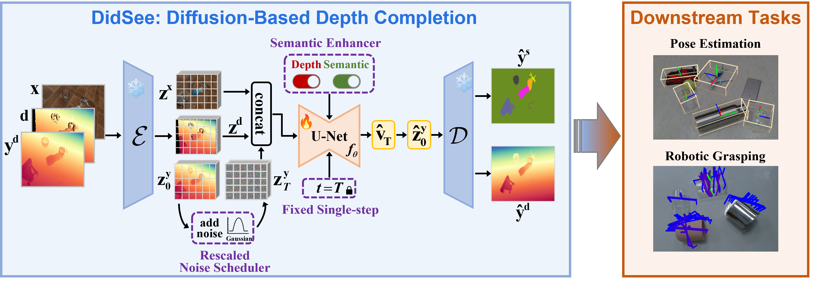

Commercial RGB-D cameras often produce noisy, incomplete depth maps for non-Lambertian objects. Traditional depth completion methods struggle to generalize due to the limited diversity and scale of training data. Recent advances exploit visual priors from pre-trained text-to-image diffusion models to enhance generalization in dense prediction tasks.
However, we find that biases arising from training-inference mismatches in the vanilla diffusion framework significantly impair depth completion performance. Additionally, the lack of distinct visual features in non-Lambertian regions further hinders precise prediction.
To address these issues, we propose DidSee, a diffusion-based framework for depth completion on non-Lambertian objects. First, we integrate a rescaled noise scheduler enforcing a zero terminal signal-to-noise ratio to eliminate signal leakage bias. Second, we devise a noise-agnostic single-step training formulation to alleviate error accumulation caused by exposure bias and optimize the model with a task-specific loss. Finally, we incorporate a semantic enhancer that enables joint depth completion and semantic segmentation, distinguishing objects from backgrounds and yielding precise, fine-grained depth maps.
DidSee achieves state-of-the-art performance on multiple benchmarks, demonstrates robust real-world generalization, and effectively improves downstream tasks such as category-level pose estimation and robotic grasping.
During training, the pre-trained VAE encoder $\mathcal{E}$ encodes the image $\mathbf{x}$, raw depth $\mathbf{d}$, and ground truth depth $\mathbf{y^{d}}$ into latent space, producing $\mathbf{z^x}$, $\mathbf{z^d}$, and $\mathbf{z^y_0}$, respectively. ①The noisy input $\mathbf{z}_t^\mathbf{y}$ is generated using a rescaled noise scheduler, which enforces a terminal-SNR of zero to eliminate signal leakage bias. ②We adopt a noise-agnostic single-step diffusion formulation with a fixed timestep $t=T$ to mitigate the exposure bias that arises during multi-step sampling. In this formulation, the model's prediction $\hat{\mathbf{v}}_T$ equals the estimated latent $\hat{\mathbf{z}}_0^\mathbf{y}$, which is then decoded by the VAE decoder $\mathcal{D}$ into a depth map. Consequently, we supervise the denoising model $f_{\theta}$ using a task-specific loss in pixel space to enhance performance ③We introduce a novel semantic enhancer that enables the model to jointly perform depth completion and semantic regression, improving object-background distinction and ensuring fine-grained depth prediction. ④The restored depth maps can be applied to downstream tasks, such as pose estimation and robotic grasping on non-Lambertian objects.


Please refer to our paper for more technical details :)